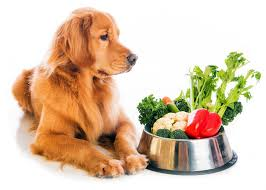
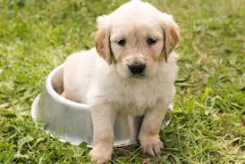
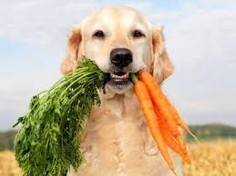
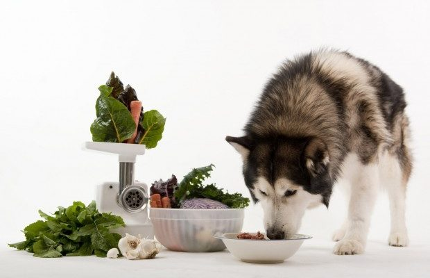
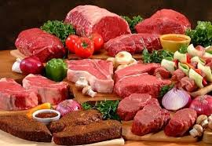

Alimentação Natural
Você com certeza já ouviu falar em alimentação natural para cães, ou apenas AN. Cada vez mais, tutores de pet têm aderido a essa modalidade de alimentação. No entanto, ainda existem muitos mitos e desinformação sobre como funciona a comida natural para cachorros.
A alimentação natural para cães é uma dieta balanceada composta por ingredientes naturais e que são minimamente processados, isto é, não passam por processos industriais como acontece com as rações. É uma alimentação equilibrada que contém os níveis de nutrientes que o animal precisa para se manter saudável. E o único tipo de processamento que sofrem esses alimentos ocorre dentro da nossa cozinha: o cozimento e o congelamento.
Uma das maiores confusões que acontecem entre os tutores é achar que a comida natural para cachorros é resto de comida da família. Não vale abrir a geladeira, ver o que está sobrando lá dentro e oferecer para o pet. Isso inclui não oferecer pizza que sobrou do jantar, a lasanha e até o arroz e feijão. A alimentação natural para cães também não é servir só frango, arroz e vegetais para o peludo. E muito menos oferecer ao cão uma dieta vegana ou vegetariana.
Também não é só misturar alimentos com a ração, sem a orientação de um veterinário especializado em nutrição.
O que é alimentação natural?

Para entender melhor como é composta a alimentação natural para cães é importante falar um pouco da origem dos nossos melhores amigos. Os cães são animais fisiologicamente carnívoros, isto é, foram feitos para comer carne. Seu organismo está preparado para receber alimentos com maior percentual de proteína.
Cachorros são descendentes de lobos e ainda partilham muito do código genético dessa espécie. Mesmo com a domesticação dos cães, há cerca de 15 mil anos atrás, eles não deixaram de ter hábitos naturais. Passaram a caçar ao lado dos homens e comer o que era oferecido a eles. Com o avanço da agricultura no mundo, os cães passaram a tolerar mais a ingestão de outros nutrientes, como carboidratos (amido), que antes eram somente consumidos indiretamente por meio da alimentação de presas que se alimentavam de vegetais.
Assim, a alimentação natural para cães propõe uma dieta composta por um equilíbrio entre proteínas, gorduras de boa qualidade, carboidratos, fibras, vitaminas, minerais e água. Mesmo na AN para cães, o carboidrato é utilizado. Não por uma grande necessidade nutricional do cão, mas para poder diminuir a grande quantidade de proteína (que é mais cara) e manter tudo em um equilíbrio saudável.
Ainda são necessários suplementos minerais para compensar tudo o que o pet precisa, mesmo com a alimentação natural para cães, além de probióticos e prebióticos, que favorecem a saúde intestinal do cão. Tudo isso, com ingredientes de qualidade e sem o uso de subprodutos rejeitados pela dieta humana, compõem uma dieta equilibrada.
A composição nutricional da comida natural para cachorro deve ser feita sob a orientação de um médico veterinário nutricionista e de acordo com o estilo de vida do animal, idade, porte e nível de atividade. Assim, a dieta poderá ser modulada de acordo com a necessidade individual do cachorro, levando em conta também predisposições genéticas ou doenças crônicas que o pet pode ter.
Você ainda pode escolher o tipo de alimentação natural que achar mais interessante e que tenha a ver com o seu pet: cozida, crua com ossos ou crua sem ossos.
Alimentação natural x Rações

Alimentação natural para cães não é moda. Na verdade, as rações podem ser consideradas muito mais modismo do que a comida natural para cachorro. Afinal, as rações industrializadas só existem no mercado há 20 anos. Antes disso, do que os cães viviam?
Basicamente, de comida! Somente na década de 40 surgiram as primeiras rações nos Estados Unidos. No Brasil, o alimento pronto e processado para cães começou a ser produzido na década de 70. Fica claro que os cães passaram muito mais tempo consumindo alimentos naturais do que processados.
A ração é um alimento equilibrado, formulado matematicamente. Existem mínimos de nutrientes que devem estar presentes. Em sua maioria, são compostas com um percentual maior de carboidratos (extrato etéreo) e menor de proteína e gorduras. Para se ter uma ideia, podem chegar a 50% ou mais de carboidratos na fórmula. Se levarmos em consideração a alimentação dos ancestrais caninos, esse mesmo nutriente representava apenas 15%. Já as proteínas, estão presentes em menores quantidades.
Muitas marcas de rações utilizam o milho e a soja transgênicos (identificados com a inicial T na embalagem), vísceras e outras partes que não são consideradas adequadas para o consumo humano, além de conservantes como BHA e BHT, que podem ser cancerígenos. Por ser um alimento extremamente seco, contém apenas 10% de água, contra 60 a 80% presente em dietas naturais.
A maior diferença é que a alimentação natural para cães busca adaptar o alimento para a melhor digestão e aproveitamento dos pets. Os dentes dos cães já indicam isso: são presas que servem para rasgar carnes e têm menor capacidade para triturar alimentos como vegetais, por exemplo.
Os benefícios da dieta natural para cães incluem: alta palatabilidade (com sabor e textura muito atrativas), fezes firmes e com menos odor, menos gases, mais vitalidade, pelagem brilhante, maior resistência às doenças, melhor hidratação do organismo e menor necessidade de ingestão de água, além de ser um alimento customizado para o seu pet.
Alguns pontos, no entanto, podem dificultar a adesão de alguns tutores à alimentação natural para cães. Você vai precisar de muito espaço no freezer, para que possa produzir os alimentos e congelar para o consumo. Também é necessário que seja feita a correta suplementação de vitaminas e minerais que podem não estar presentes nos ingredientes. Por último e mais importante, é preciso seguir à risca a dieta. A falta de comprometimento com a alimentação caseira pode prejudicar muito o seu peludo.
Com isso, você já entendeu o que é a alimentação natural e a diferença dela e as rações. Se você achou interessante, continue lendo que assim você será capaz de prover todos os recursos para uma alimentação natural saudável e balençeada para o seu pet! Caso você não tenha tido tanto interesse e prefira o modelo de alimentação com rações, consulte nosso artigo sobre as vantagens e importância da ração para o seu cãozinho aqui. Você também irá encontrar um ranking das melhores rações de 2020 junto com uma consulta de preços incrível!
Todos os cães podem fazer uso da alimentação natural?

Por ser feita de forma individualizada, a alimentação natural pode ser adaptada para todos os tipos de cães (jovens, adultos ou idosos), castrados ou não e também para portadores de doenças crônicas.
Algumas das enfermidades que apresentam boas respostas a mudança de dieta para a alimentação natural para cães:
Essas condições requerem cuidados extras com o cardápio. Como exemplo, cães com doença renal crônica devem receber uma dieta caseira com menor teor de fósforo e proteínas. Pets com alergia alimentar não esclarecida precisam fazer primeiro uma dieta de eliminação para identificar o que pode estar causando o quadro. Caso contrário, a alimentação continuará causando os sinais de alergia.
Outra vantagem da alimentação natural é ser ajustada para cães que possuem mais de uma doença, por exemplo alergia e cálculos urinários. Para isso, é preciso contar com a orientação de um veterinário especialista em nutrição, que irá formular um cardápio que atenda a essas duas necessidades. Já as rações terapêuticas, por terem uma fórmula pronta, são limitadas ao tratamento de uma só doença, podendo até agravar outros sintomas.
Como introduzir a alimentação natural

O primeiro passo é procurar um especialista no assunto. O veterinário vai pedir exames de rotina e complementares para que possa avaliar todas as necessidades nutricionais do cão.
A partir daí, o tutor e o veterinário devem conversar sobre a rotina do animal para que possa ser estipulada a quantidade de calorias que devem ser consumidas diariamente. Outro ponto importante é incluir na dieta alimentos que sejam fáceis de encontrar e cozinhar, para que não haja desistência do tutor no meio do caminho. Com o cardápio inicial em mãos, é hora de colocar em prática.
A rotina do pet não deve mudar muito. Se você está acostumado a oferecer o alimento duas ou três vezes por dia, deve apenas dividir a quantidade diária em cada refeição. Para facilitar, você pode preparar os alimentos e congelar já nas porções corretas. A organização dos alimentos também pode ser semanal, quinzenal ou mensal. Depende da sua rotina!
No caso da alimentação natural para cães cozida, uma dica importante é usar o micro-ondas o mínimo possível para preservar os nutrientes dos alimentos.
Caso você contrate um serviço para cuidar do seu amiguinho, ele também seguirá essas instruções, mantendo a mesma alimentação natural e balanceada.
Ingredientes importantes na alimentação natural
 Em sua maioria, são ingredientes fáceis de encontrar no nosso dia a dia. Abaixo uma relação dos principais:
Já alguns alimentos devem ser evitados na dieta dos cães, por serem de difícil digestão ou potencialmente tóxicos, como carambola, cebola, chocolate, leite, pão, salsicha, uva, café, macadâmia, entre outros.
Custo
Muitos tutores podem se assustar com a diferença de preço entre as rações e uma dieta natural balanceada. No entanto, se pensarmos na qualidade dos alimentos que estão sendo oferecidos, o custo-benefício é muito válido. Tanto é verdade que a alimentação natural para cães balanceada feita em casa pode ser consumida até por você – mas apostamos que ninguém quer nem provar a ração, certo?
A veterinária Sylvia Angélico, do site Cachorro Verde, afirma que os custos de uma dieta completa podem ser comparados aos das rações super premium. No entanto, o valor exato a ser gasto por mês vai depender de algumas variáveis:
Se o custo for maior do que o da ração, vale a pena avaliar a qualidade de vida e a longevidade que você poderá oferecer ao seu peludo!